Как открыть продвинутый навык
Три шага, независимо для каждого слота Q / W / E / R — прокачивать все четыре сразу не обязательно.
Обычными книгами навыка доведи нужный Q, W, E или R до 10 уровня. Остальные три слота можно вообще не трогать — открытие идёт по слотам, не пакетом.
Книга продвинутого навыка падает только в Фарм зоне. Шанс — в 100 раз ниже, чем у обычной книги того же навыка. Для изучения нужно 5 книг.
Книги тратятся один раз навсегда. После этого в панели навыков появляется бесплатный тумблер база ⇄ продвинутый — переключай в любой момент без затрат.
Визуальные эффекты
У каждого продвинутого навыка — своя signature-анимация в бою. Вот их язык.
Второе лицо каждого класса
По одному продвинутому навыку на каждый слот — сильнее, зрелищнее, и полностью меняет ритм боя.
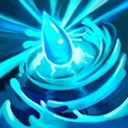
Один удар с тройным уроном и оглушением на 5 секунд — вскрывает даже бронированную цель.
Вспышка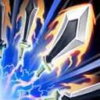
Удвоенный урон по всем целям в радиусе 220 — двойное кольцо стали проходит сквозь толпу.
Взрывная волна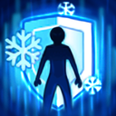
+80% защиты и, в отличие от базовой версии, ещё +10% атаки на 10 секунд — танк без потери урона.
Пульс маныБросок к цели с уроном и замедлением на 30% на 10 секунд — не даёт выбраться из боя.
Импульс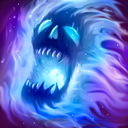
15% лечения от урона (вместо 10%) и +20% атаки на 10 секунд — раскручивает бой в свою пользу.
Пульс маны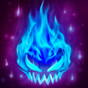
Разлом тьмы под ногами и долгий +5% крит. урона на 20 минут — накопительная сила на весь фарм.
Тёмный разлом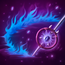
+25% атаки на 5 секунд, и каждый обычный удар бьёт волной крови по площади вокруг цели.
Волна крови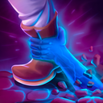
Рывок с уроном, который срывает с цели 20% защиты на 10 секунд — открывает добычу для всей группы.
Импульс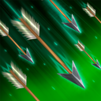
Тройной урон по всем целям в радиусе 220 — накрывает толпу вместо одной цели.
Пульс маны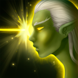
Тройной урон в одну точку и оглушение на 2 секунды — добивает то, что пережило «Град стрел».
Вспышка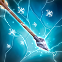
Из рывка — в долгий баф: +5% шанса крита на 20 минут. Ставится один раз в начале фарма.
Пульс маны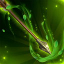
×2 скорости атаки на 5 секунд вместо базового ×1.5 — шквал стрел на пределе.
Импульс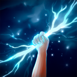
Тройной урон снарядом вместо двойного, плюс оглушение на 3 секунды при попадании.
Вспышка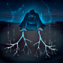
Тройной урон по площади вместо простой заморозки — тот же радиус, втрое больнее.
Ледяной шторм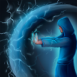
Двойной урон по площади 220 плюс те же +80% защиты на 3 секунды — щит, который ещё и бьёт.
Вспышка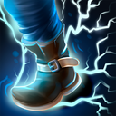
Рывок сквозь пространство, который ещё и возвращает 20% HP — побег и лечение одним действием.
ИмпульсРой бабочек лечит 5% максимального HP каждую секунду в течение 10 секунд — плавный самолечащий поток.
Пульс маны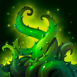
Держит цель на месте и добавляет тройной урон к обездвиживанию — контроль, который ещё и наказывает.
Тёмный разлом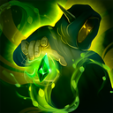
+50% защиты себе и пати плюс ×2 скорости атаки на 4 секунды — из щита в разгон урона.
Пульс маныЛечит 20% HP себе и всей пати разом — тот же радиус заботы, но заметно мощнее молитвы.
ИмпульсФарм зона
Квадратная locked-локация в сердце мира — единственное место, где падают книги продвинутых навыков.
Что там внутри
Четыре комнаты по 20 монстров 21–30 уровня вперемешку — зомби, ящеры и орки, стражи и воины. Они не нападают первыми, но полноценно отвечают в бою. Обычный дроп, GRAM и Liberty с них не падают — только осколки редкого оружия и книги.